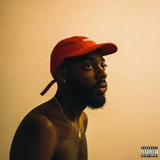
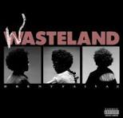
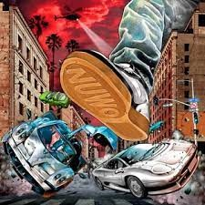

Brent Faiyaz
Brent Faiyaz is a Grammy-nominated, American recording artist from Columbia, Maryland. His rise to fame came in 2016 after he was featured on the Sexuple platinum-certified song "Crew" by artist GoldLink who discovered his music on SoundCloud. He now has multiple platinum-selling singles including Trust and All Mine.
Albums
  - Sonder Son (2017)
- Wasteland (2022)
- Larger Than Life (2023)